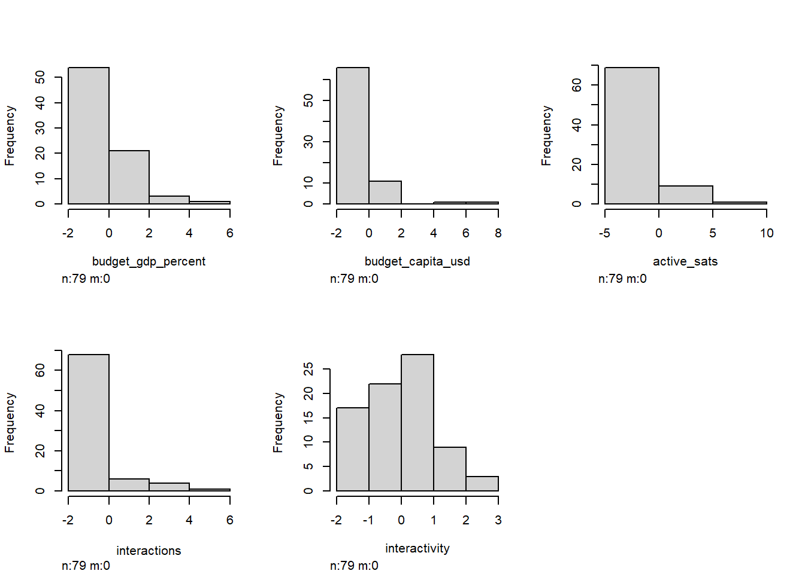
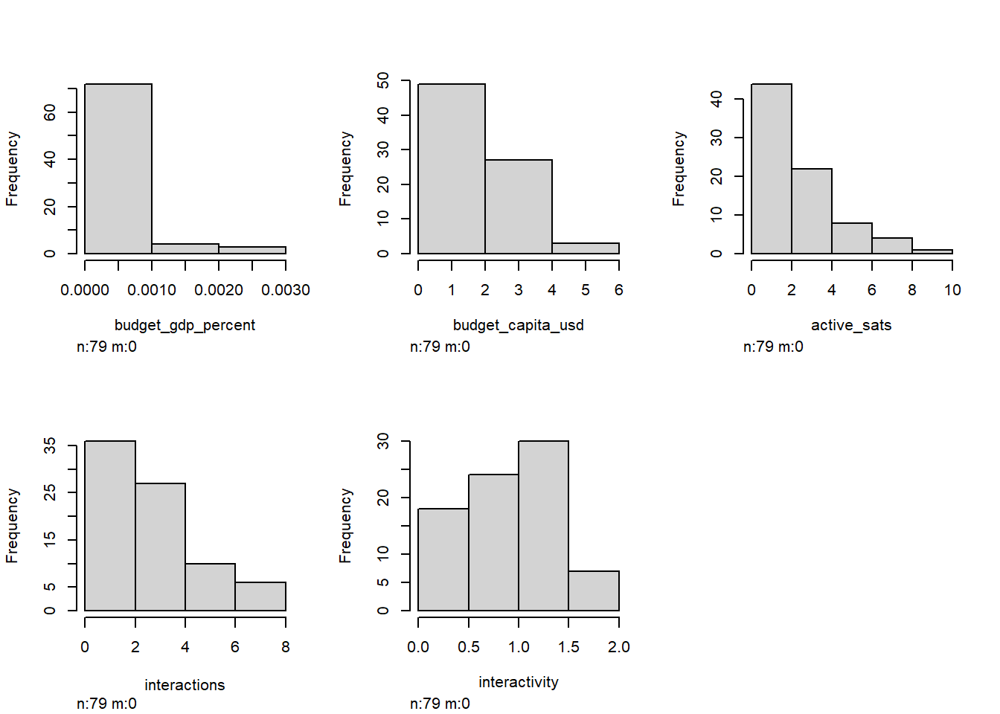
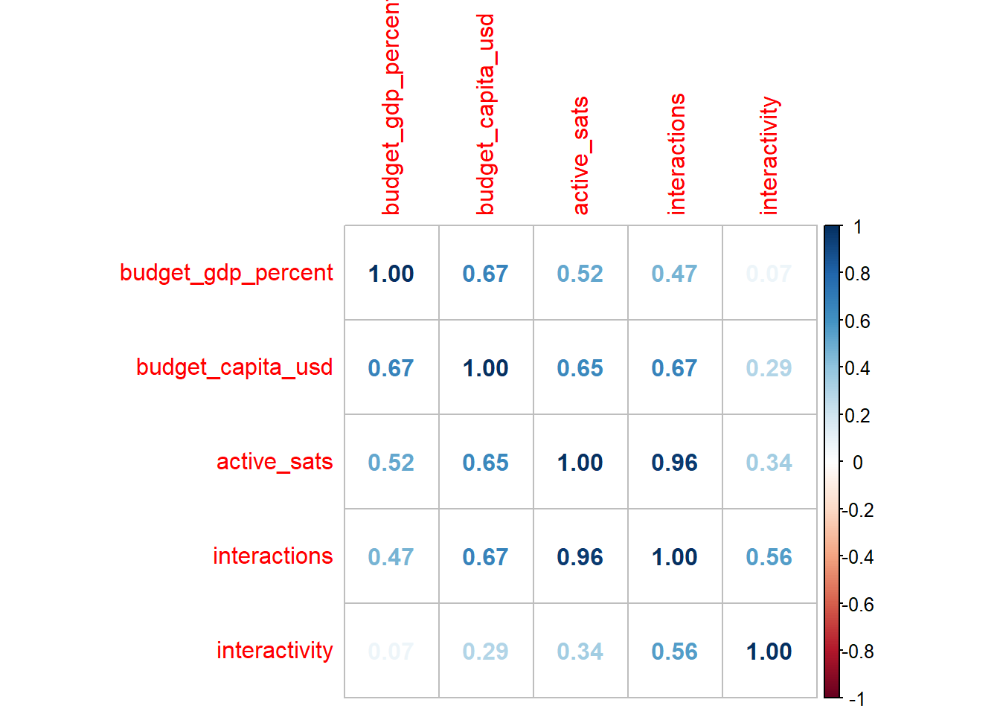
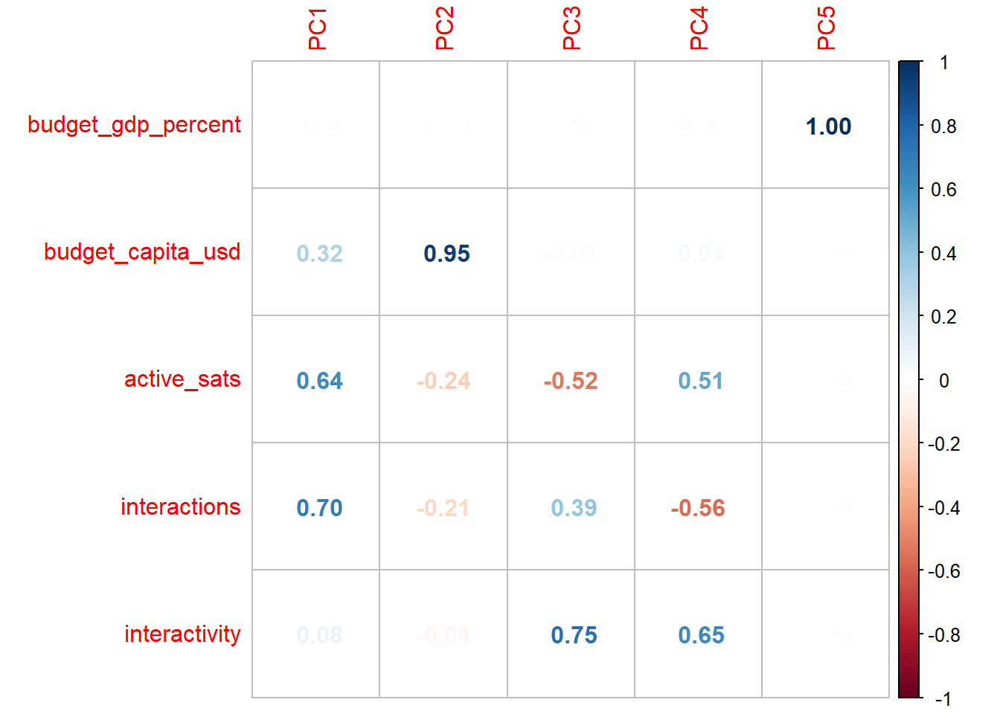
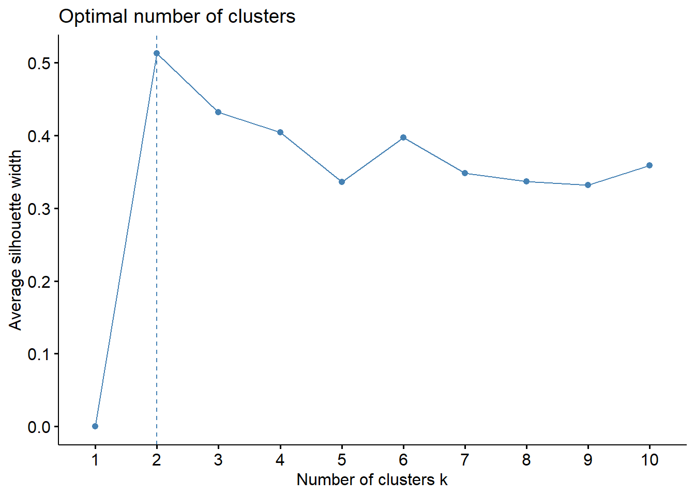
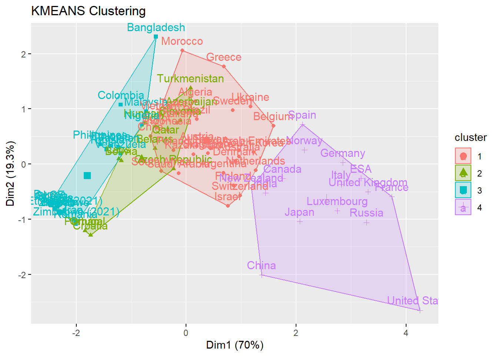
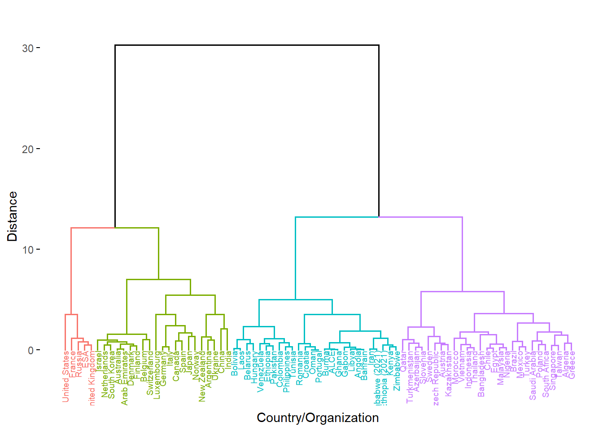

library(tidyverse) # this is a powerful library that streamlines the data process
library(readxl) # lets us read an Excel file
library(randomForest) # one possible way to do prediction models
library(factoextra) # clustering models
library(plotly) # interactive graphics using JavaScriptHow I clustered space program data
This is a short walkthrough of how I created clustering methods for space program analysis, to group space programs by size and scope for later discussion about the larger space ecosystem. The initial analysis Cari and I did was limited to a single dataset of active satellites as administered here by the Union of Concerned Scientists, and supporting budget and GDP data from other sources. This work has already expanded in size and scope, but it’s fun to look back at where we started!
Setup
Importing packages
Data
Importing from .xlsx
We already have a super-fantastic spreadsheet to pull from where we’ve stored our collected data. Let’s import it and stick with four main variables:
budget_capita_usd: The amount of space budget, in dollars, per person.
active_sats: The current number of satellites a country is operating or contracting in orbit today.
interactions: This took a bit of behind-the-scenes calculation in Python. It’s the amount of “interaction instances,” or every single cooperation a country had with another country across all active satellites.
interactivity: The amount of interactions per active satellite, or a way to measure how likely a country is to cooperate with others instead of go solo.
import <- read_excel("C:/Users/twcro/Documents/GitHub/SpaceSilkRoad/agency_budgets_old.xlsx",
.name_repair = janitor::make_clean_names,
col_types = c("skip", # Organization
"text", # Country
"skip", # ISO_A3
"text", # Region
"skip", # Annual Budget, self-est.
"skip", # EuroConsult est., military+civil (2021)
"skip", # Space in Africa est. (2020)
"skip", # GDP
"skip", # GDP/capita
"numeric", # Budget/GDP %
"numeric", # Budget/capita (USD)
"skip", # Year of data
"numeric", # Active sats.
"numeric", # Interactions
"skip", # Soviet former
"skip", # ESA member
"skip", # Arabsat investor
"skip", # Source(s)
"skip" # Comments
)
) %>%
na.omit() %>%
remove_rownames %>%
column_to_rownames(var="country") %>%
# This is where I calculate "interactivity", or the amount of interactions
# per active satellites.
mutate(
interactivity = case_when(
active_sats != 0 ~ interactions / active_sats,
TRUE ~ 0
)
)
# I'm removing "region" for our modelling df because it's not going to be used
# in the numerical analysis
df <- import %>%
select(-region)And here are the first few lines of what we’re dealing with!
| budget_gdp_percent | budget_capita_usd | active_sats | interactions | interactivity | |
|---|---|---|---|---|---|
| ALCE | 0.003% | 0.28 | 0 | 0 | 0.00 |
| Algeria | 0.061% | 2.26 | 5 | 15 | 3.00 |
| Angola | 0.047% | 0.93 | 0 | 0 | 0.00 |
| Argentina | 0.025% | 2.66 | 39 | 49 | 1.26 |
| Australia | 0.021% | 12.61 | 14 | 29 | 2.07 |
| Austria | 0.018% | 9.71 | 4 | 8 | 2.00 |
The PCA later shows that budget as a percent of GDP has nearly no importance, so eventually I will remove it as a feature.
Preprocessing
Multicollinearity and feature importance
What is multicollinearity? It’s the idea that more than one of our variables correlate in a way that it’s hard to separate what influence comes from where.

For instance, if both “active satellites” and “budget” seem to make the same direction of change, how do we tell if the influence is coming from one over the other?
What is feature importance? It’s the degree to which a single variable seems to influence the overall data. (The math behind it is related to predictive machine learning.)
I’m measuring both of these to determine if our initial dataset is sound.
Standardize and normalize
Before I get to multicollinearity and feature importance, I need to examine the data structure. I’m going to scale the numeric variables from \((-1,1)\) to put them on equal footing. Then, I’ll take a look at how the data is distributed.
df.scale0 <- as.data.frame(scale(df))
df.scale0 %>% head() %>% knitr::kable(caption = "Scaled from -1 to 1", digits = 2)| budget_gdp_percent | budget_capita_usd | active_sats | interactions | interactivity | |
|---|---|---|---|---|---|
| ALCE | -0.76 | -0.34 | -0.23 | -0.35 | -1.30 |
| Algeria | 0.44 | -0.29 | -0.22 | -0.31 | 1.14 |
| Angola | 0.16 | -0.33 | -0.23 | -0.35 | -1.30 |
| Argentina | -0.31 | -0.28 | -0.14 | -0.21 | -0.28 |
| Australia | -0.39 | -0.02 | -0.20 | -0.27 | 0.38 |
| Austria | -0.45 | -0.10 | -0.22 | -0.32 | 0.32 |
dist0 <- Hmisc::hist.data.frame(df.scale0)
Behind the scenes, I did some skewness and kurtosis calculations that confirm what we can visually interpret below.
Okay, so yikes. Look how the features are “right skewed,” meaning that a few huge outliers are present in our dataset (cough USA cough).
In the case of unsupervised machine learning, that might not prove to be an issue! But in the case of visualizing these things as human, these really large outliers are going to be distracting in later analysis.
Luckily, I have a solution that doesn’t involve removing outliers. Why don’t we want to cut out outliers? Outliers, though “distracting,” are still an important part of the dataset! As we eventually make models, it’s important to remember that even the smallest and biggest programs are still parts of the ecosystem. Every model we will make is relative, and ignoring players is a certain way to draw bad conclusions.
Instead, we can treat our data logarithmically, by applying \({\log (x)}\) to columns with high skewness. This is called “normalization,” or making things more…normal. We want a nice, normal hill.
So, why is removing outliers not ideal, but logging okay? It’s because the relative structure and integrity of the data remains intact.
df.norm1 <- df %>%
mutate_all(~log(. + 1))
df.scale1 <- as.data.frame(scale(df.norm1))
dist1 <- Hmisc::hist.data.frame(df.norm1)
Nice. Everything looks a lot less visually distorted when logged, so I’ll stick with df.norm1 moving forward. (Note that our goal isn’t to achieve a normal distribution here: our data is neither normal nor log-normal, and we’re not trying to assume normality.)
Find multicollinearity
Now back to the multicollinearity I mentioned before. Multicollinearity isn’t necessarily a bad thing when it comes to unsupervised machine learning. In fact, in some models, it can be very informative. In general, though, it indicates the degree to which a dataset is redundant.
In this correlation matrix, a \(1.00\) indicates that there is perfect correlation. (Something will always be a \(1.00\) with itself.) A \(0\) indicates no correlation at all, and a negative number indicates the opposite direction of correlation.
cor_matrix <- cor(df.norm1)
corrplot::corrplot(cor_matrix, method = "number")
I’m happy with this. The fact that some variables have a relationship hovering around 0.2 or 0.3 tells me that this dataset is definitely worth exploring.
Principal component analysis
I’m not quite yet finished with multicollinearity. I’ll come back to it, but I want to take a moment to explain principal component analysis (PCA) and why it is useful for what we are about to do.
In essence, PCA boils down as many features, or variables, we have into that many dimensions. A dataset with 6 variables will be given 6 dimensions after a PCA. The math is a bit mathy, but the point is that we are seeing the “essentials,” or, quite literally, the principal components, by summarizing our variables.
The first dimension might be dominated by variable \(x\), while the second dimension might show that variables \(y\) and \(z\) pull against each other. Here’s my code to build a PCA:
pca <- prcomp(df.norm1)
components <- pca$x %>%
data.frame() %>%
select(PC1,PC2,PC3) %>%
mutate(PC2 = -PC2)
exvar <- summary(pca)$sdev[1:3]
loadings <- pca$rotation %>%
as.data.frame() %>%
mutate(
PC2 = -PC2,
PC4 = -PC4
) %>% as.matrix()
scaled_loadings <- sweep(loadings[, 1:length(exvar)], 2, exvar, `*`)
features = scaled_loadings %>% row.names()
corrplot::corrplot(loadings, method = "number")
Breaking our dataset down into principal components gives us an idea of how our variables are related to one another. We can see that each successive principal component has different “loadings” respective to each variable. Principal components are in order of weight. PC1 will be the most influential, while PC5 has little, if any, real say in how our data are distributed.
Funnily enough, budget_gdp_percent is a fat goose egg until the weakest component; the PCA is telling us that budget as a percent of GDP is a terrible measure to separate space programs. I’m prepared to call a FRAUD ALERT. Just to confirm that I’m justified in removing this variable outright, let’s consider a Euclidean distance measure of the loadings to see what amounts to be a “total influence” measure:
| Magnitude | |
|---|---|
| budget_gdp_percent | 0.000 |
| budget_capita_usd | 1.261 |
| active_sats | 1.898 |
| interactions | 2.056 |
| interactivity | 0.504 |
Okay…that’s even more pathetic than I expected. This procedure is part of good data processing! The loadings gave us enough to cut out our weakest feature, making the data process a bit easier moving forward. But to draw better conclusions, let’s turn to a visual that shows the different ways our other four variables influence the distribution.
Why are there only 3 PCs for 4 variables?
There is a PC4, but the later components are weaker in importance, and we can’t visually show 4-D, so we choose to ignore it on the plot. Just because we aren’t showing it doesn’t mean we ignore it in the math later on, though.
This graphic is really telling! Observe how the countries are naturally falling on a general line from “big programs” to “small programs.” However, different variables have different influences.
active_sats, interactions, and interactivity roughly fall on a single plane, which makes sense: all three variables exclusively cover satellite activity, so in some way or another, they are going to be interrelated. Meanwhile, budget_capita_usd is nearly orthogonal (at a 90-degree angle) to this plane of satellite activity, showing us that space program budgets and activity are absolutely separate measures of space program size.
At face value after seeing this data, that might make sense. But classically speaking, a country with a bigger space budget should be launching more satellites, right? This PCA implies that things are actually much more nuanced.
Clustering
Okay. We’re in good shape. The PCA has confirmed that something interesting is going on. Even better, PCA takes care of all the heavy lifting for the first type of clustering we’ll try.
\(k\)-means clustering
Don’t get too overwhelmed: it’s a simpler concept than you think. After breaking things down into principal components, we define \(k\) number of clusters ourselves, and the machine learning algorithm finds that \(k\) amount of central means around which \(k\) number of groups will form.
Think of these clusters like mini solar systems. The little data points, or planets, hovering around get pulled into the mean’s, or star’s, orbit, so that we can visually separate them!

Wait, wait, wait. How do we decide \(k\)? Do we just pull a random number out of a hat? Well…I guess we could. In theory, \(k\)-means clustering is robust enough to maintain some extent of validity no matter how many clusters we choose (even if it might be ugly or inconclusive).
There’s a better way, though. I’m going to use the neat NbClust package in factoextra that uses a series of indices to tell us ideal number of clusters.
fviz_nbclust(df.norm1, kmeans, method='silhouette')
We can see that the silhouette method tells us that 2 clusters is the ideal. Nonetheless, let’s consider the context of what we want to get out of the study. It would be nice to have a higher number of clusters that gives us a higher level analysis than “there is one strong group and one weak group.” Per the silhouette chart, \(k\) of 3, 4, or 6 aren’t bad choices either. For now, let’s try \(k=4\).
plot_km <- function(data, k, nboot = 2) {
km <- eclust(data, "kmeans", k = k, nboot = nboot)
df_km <- data %>%
mutate(
k_cluster = factor(km$cluster)
)
# based on the PCA, I'm going to use interactivity, active_sats and budget as axes
km_fig <- plot_ly(df_km,
x = ~budget_capita_usd,
y = ~active_sats,
z = ~interactivity,
color = ~k_cluster,
mode = 'markers',
marker = list(size = 6)) %>%
add_markers(text = rownames(df_km)) %>%
layout(
plot_bgcolor = "#e5ecf6"
)
return(km_fig)
}
plot_km(df.norm1, k = 4)
Check that out. We can see four machine-generated clusters. One, that includes the USA, France, and China, shows the stereotypical “big” space programs that have high levels of funding and activity.
Hierarchical clustering
For our final trick, let’s pull out another type of clustering. Hierarchical clustering makes a dendrogram, which is essentially a family tree of data points that shows close and distant relations. You can imagine that the “siblings” on the tree are very similar in the variables we have chosen, and the “distant cousins” aren’t.
How does an algorithm decide this family tree? There are two options when we hierarchically cluster.
“Bottom-up” approach: the algorithm considers every country as an individual and looks for similar countries, grouping individuals into pairs then grouping pairs into larger clusters until the entire tree is connected.
“Top-down” approach: the algorithm considers every country as one big group, and continuously finds differences to split them up until every single country is divided by those differences.
For this usage, I’m going with Ward’s minimum variance method, which is a type of “bottom-up” hierarchical clustering. If you really want to know, it uses the squared Euclidean distance between each data point to determine similarity.
Where \(d_{ij}\) is our distance measure:
\[ d_{ij}=d(\{X_i\},\{X_j\})=||X_i-X_j||^2 \]
So why don’t I do some sort of test to see the “ideal” number of clusters? Unlike \(k\)-means clusters, where \(k\) directly influences the quality and integrity of the clusters, the hierarchical clustering algorithm is static, and the number of h-clusters I define is only for the purpose of visualization.
That’s because Ward’s method consistently computes distance. Take a look at our “family tree” below. It has a numerical y-axis labelled “Distance.” The farther the separation between two groups or countries, the farther apart they are in similarity. Look at the giant divide between the largest left and right groupings. The clustering algorithm determined that there is an extremely high-distance gap between the highest-output space programs and their younger counterparts.
For that reason, I find h-clustering to be more informative than \(k\)-means in this scenario. The family tree structure is visually powerful: for instance, take a look at the small grouping in blue of barely-funded African space programs, or the close pairing of China and India, two highly-funded but relatively young programs that are competing to break into the upper echelon of space-exploring countries.

Four-tiered structure:
Red: tier 1*
Green: tier 1
Purple: tier 2
Teal: tier 3
Discussion
This leaves us with four clear divisions between space programs. What exactly, can we conclude?
First of all, a disclaimer: not much. There’s a tenet of “garbage in, garbage out” when it comes to unsupervised learning methods. Our initial dataset was both comprehensive and limited. The budget data and satellite data covered many countries, but we importantly lack futher variables. A space program shouldn’t be defined only by “number of satellites” and “amount of budget.” The data was also flawed in the sense that budget data is entirely dependent on accessible. While some governments are forthcoming and transparent with their data, many don’t even have an official website for their space program. We relied on consultant estimates for many of the programs, which is less than reliable going forward.
Second of all, a point of optimism: a lot. It’s important to approach quantitative methods qualitatively. Based on existing knowledge about space programs, the results line up! Even the surprises are pretty easy to explain. Did you know that France has the biggest satellite industry outside of Russia and the United States? What we can draw from these clustering methods needs an asterisk that this was to explore methodology rather than draw definite conclusions.
On the general left, there is a clustering of highest-performing space programs that we generally termed tier \(1\). Two highlights are Ukraine and Argentina, one of which has inherited some remnants of the Soviet space program and continues to make use of it, and one of which has benefited greatly from public-private cooperation and has separated itself from its peers across the Global South.
To the far left, four historically powerful countries whose rocketry and satellite programs originated from the Cold War era as well as the cumulative power that is the European Space Agency differentiate themselves as \(1^{*}\).
On the general right are space programs who are, across the board, less-funded and have a lower amount of output. To the far right is tier \(2\). These countries shouldn’t be overlooked, a many of them focus their lesser resources into well-honed specialties, such as Kazakhstan’s thriving launch industry, or Brazil’s specialization in environmental monitoring.
Tier \(3\) in teal consists of up-and-comers. The distinction of being in this grouping should be a proud one, as these programs have largely arisen from comparatively the fewest resources but have still escaped Earth’s atmosphere. These countries should be watched closely as prospective partners and many of their rises will be rapid.
As a final visualization, take a look below at all of our countries, recontextualized with their regions and attributed “tiers” from the hierarchical clustering. Does it line up with what you might expect?